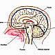
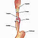
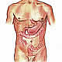
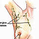
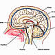
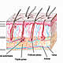
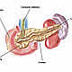
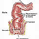

OncoGuía - Tipos de cáncer
-

Adenoma de HipófisisGlándula situada en la silla turca
-
 ColonLa última porción del aparato digestivo
ColonLa última porción del aparato digestivo -
 Cuello Uterino/Cérvixparte más inferior del aparato rep. femenino
Cuello Uterino/Cérvixparte más inferior del aparato rep. femenino -
 Endometrio/úteroórgano hueco, situado en la pelvis.
Endometrio/úteroórgano hueco, situado en la pelvis. -

Esófagotubo hueco que transporta los alimentos
-

Estómagositúado en la parte alta del abdomen
-
 GliomasSe produce en el cerebro o en la médula espinal
GliomasSe produce en el cerebro o en la médula espinal -

MamaGlándula destinada a la producción de leche
-
 Médula Espinalel tejido nervioso más extenso del cuerpo
Médula Espinalel tejido nervioso más extenso del cuerpo -

Meduloblastomatumores malignos en la fosa posterior del cerebro
-

MelanomaCrecimiento de los melanocitos
-
MeningiomasTumor cerebral usualmente benigno
-
 No MelanomaEl tumor más frecuente del ser humano
No MelanomaEl tumor más frecuente del ser humano -

PáncreasGlándula que participa en el proceso de la digestión
-
 PróstataGlándula sexual exclusiva de los varones
PróstataGlándula sexual exclusiva de los varones -

RectoLa última porción del aparato digestivo
-
 Vejigaórgano situado en la parte baja de la pelvis
Vejigaórgano situado en la parte baja de la pelvis
Cáncer de estómago
Introducción
Los alimentos llegan al estómago a través de un tubo llamado esófago que conecta la boca con el estómago. Se sitúa en la parte alta del abdomen y está próximo al hígado, páncreas, bazo y colon transverso.
La digestión se inicia en la boca durante la masticación (mezcla del alimento con la saliva). Una vez que el bolo alimenticio llega al estómago, se combina con los jugos gástricos y la mucina, que favorecen la digestión de los alimentos para extraer los nutrientes esenciales.
La pared gástrica está formada por varias capas: la más interna es la mucosa, constituida por multitud de glándulas que se encargan de la producción de las sustancias que forman el jugo gástrico. Rodeando a esta capa, se encuentra la submucosa y, externamente, la capa muscular que se contrae y relaja, facilitando la digestión y desplazando el alimento hacia el intestino delgado. El exterior del estómago está recubierto por una membrana llamada serosa o peritoneo.
Las partes más importantes del estómago son:
- Cardias: Es el esfínter que separa el esófago del estómago. Funciona como una válvula que impide que el contenido gástrico refluya al esófago
- Cuerpo gástrico: que a su vez se divide en tres porciones: fundus, cuerpo y antro.
- Píloro: zona de unión del estómago con el intestino delgado.
Tiene una porción curvada a la derecha (curvatura menor) y otra a la izquierda (curvatura mayor).
Cada año se diagnostican en España cerca de 7.800 casos nuevos de cáncer gástrico. Suele afectar con mayor frecuencia a varones y la edad de mayor incidencia es entre los 50 y 60 años.
La mayoría de los tumores gástricos malignos son adenocarcinomas (ya sea de tipo intestinal que parece estar relacionado con los factores de riesgo o de tipo difuso, de peor pronóstico, más frecuente en personas jóvenes). El resto de las variantes son menos frecuentes (sarcomas, linfomas, tumores carcinoides…)
Prevención
En la actualidad se conocen una serie de factores que juegan un papel importante en la aparición y desarrollo de este cáncer:
- Dieta: una dieta pobre en vitamina A y C, alimentos sazonados y ahumados, y una dieta rica en salazones, podrían aumentar la incidencia de este tipo de cáncer.
- Consumo de tabaco y de alcohol: se potencian para incrementar el riesgo de padecer esta enfermedad
Helicobacter Pylori: Es una bacteria causante de la mayoría de las úlceras gástricas. Produce atrofia gástrica, metaplasia, displasia y aumenta el riesgo de adenocarcinoma de cardias. - Virus de Epstein Barr.
- Cirugía gástrica previa.
- Anemia perniciosa: ocasionada por falta de vitamina B12. Estos pacientes poseen un riesgo 20 veces mayor para desarrollar un cáncer gástrico.
- Síndromes hereditarios: Síndrome de Peutz Jeghers, poliposis adenomatosa familiar gástrica, y cáncer colorrectal hereditario no poliposis.
- Lesiones premalignas: pólipos adenomatosos, gastritis crónicas, gastritis hipertrófica (o enfermedad de Menetrier).
Por lo tanto, una dieta rica en verduras y, moderada en alimentos salados o ahumados, evitar el tabaco y un consumo moderado de alcohol, reducen el riego de desarrollar cáncer de estómago.
Diagnóstico Precoz
En la actualidad no existe ninguna prueba ni programa de screening que permita realizar un diagnóstico precoz del cáncer gástrico.
No obstante, es importante acudir al médico ante cualquier síntoma que perdure en el tiempo. Asimismo, es importante seguir las indicaciones terapéuticas en el tratamiento del Helicobacter Pylori, y realizar las revisiones periódicas que indique el especialista en caso de síndromes hereditarios o enfermedades benignas crónicas.
Síntomas y Diagnóstico Clínico
En general, en las fases más tempranas de la enfermedad el paciente no presenta síntomas, o éstos son mínimos.
Cuando los síntomas aparecen, el paciente refiere dolor abdominal, generalmente en la parte alta, y sensación de plenitud tras la ingesta (incluso con escasa cantidad de alimento). Otros síntomas frecuentes son los vómitos, las náuseas, la pérdida de peso no justificada, y un síndrome constitucional (astenia y anorexia). Con frecuencia el tumor puede romper un vaso y producir sangrados más o menos intensos que se traducen en melenas (heces de color negro por la sangre digerida) y anemia por la pérdida constante de sangre. Otros síntomas menos habituales son la aparición de una masa palpable en la zona del estómago o adenopatías supraclaviculares o axilares izquierdas.
Además de la exploración física, se realizan las siguientes pruebas complementarias:
- Analítica completa y marcadores (CEA).
- RX de tórax.
- Endoscopia digestiva alta: se introduce un tubo fino y flexible por la boca que tiene en su extremo una cámara y una luz, lo que permite realizar una visión de toda la mucosa del estómago en sus diferentes partes. Esta prueba permite realizar una biopsia y citología de la lesión sospechosa. Puede realizarse con sedación para evitar las molestias.
- Test de sangre oculta en heces: detección de sangre en las heces.
- Ecografía endoscópica: Al igual que con la endoscopia, se introduce un tubo por la boca. Este tubo posee una sonda de ecografía en su extremo que permite valorar la infiltración del tumor en las capas del estómago y la posibilidad de afectación ganglionar y su relación con los órganos vecinos.
- Tomografía computerizada (TC/scanner) Toraco-abdómino-pélvico: exploración que utiliza rayos X, tomando una serie de imágenes del interior del cuerpo. Habitualmente se administra contraste (oral y/o intravenoso) con el fin de localizar la lesión tumoral, determinar la extensión y la posible afectación de los ganglios linfáticos adyacentes, así como descartar o confirmar la afectación de otros órganos.
- Laparoscopia: Se trata de un procedimiento quirúrgico, que requiere anestesia general e ingreso hospitalario. La finalidad de este procedimiento es determinar la existencia de afectación en órganos como el hígado o el peritoneo (membrana que recubre los distintos órganos del abdomen). Está indicado en aquellos casos en el que las pruebas de imagen no son concluyentes, ya que permite la visualización directa de los órganos del abdomen y la posibilidad de tomar biopsias.
- PET-TAC o PET: (tomografía por emisión de positrones). Es un procedimiento diagnóstico en el que se inyecta un contraste que contiene glucosa radioactiva, que se fija en los tumores malignos, pudiendo dar información sobre la actividad y localización o localizaciones de la lesión. Es muy útil para completar el estudio de extensión y descartar afectación a distancia.
Fases del tumor
Con el fin de determinar el tratamiento más adecuado para el cáncer de estómago, es importante conocer la extensión de tumor. Dependiendo de si el tumor está confinado al estómago, invade estructuras vecinas u órganos a distancia, el tumor se clasifica en diferentes estadios:
Estadio 0: El tumor está confinado a la mucosa o epitelio del estómago. No existe infiltración ganglionar ni afectación metastásica.
Estadio I: Esta fase se puede dividir en:
- Estadio IA: Tumor que invade la muscular propia, sin afectación de ganglios u órganos a distancia.
- Estadio IB: Tumor que invade la lámina propia o la submucosa, con afectación de 1 a 2 ganglios regionales.
Estadio II: Se subdivide en:
- Estadio IIA: El tumor invade en profundidad la pared gástrica sin invadir estructuras vecinas y sin afectación ganglionar o invade la muscular o la submucosa con afectación ganglionar entre 1 y 6 ganglios.
- Estadio IIB: El tumor invade el peritoneo sin afectación ganglionar o independientemente de la invasión de la pared ganglionar presenta infiltración de más de 7 ganglios regionales. No existe metástasis a distancia.
Estadio III: Se subdivide en A, B y C dependiendo de la invasión de la pared (el tumor puede llegar a invadir órganos vecinos) con afectación axilar importante (más de 7 ganglios).
Estadio IV: independientemente de la afectación de la pared y de los ganglios regionales, se observa metástasis a distancia.
Tratamiento